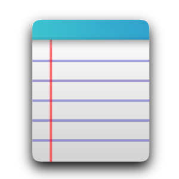

Примери
Оваа страна содражи примери за некои од основните HTML елементи.
Користи ја оваа страна како референца, кога ќе ја правиш твојата веб страна.
Headings
Ова се различните формати:
Heading 1
Heading 2
Heading 3
Heading 4
Heading 5
Heading 6
Текст
Овој пример покажува како текстот (во рамки на '<p></p>' таговите) ќе биде прикажан:
Ова е пример со задебелен текст и на лево
Ова е пример со закосен текст и на десно
Листи
Ова е неподредена листа:
- 3
- 2
- 1
- 4
Ова е подредена листа:
- 1
- 2
- 3
- 4
Слики
сликите може да се постават лево, во средина или на десно:
Својствата за текст на каскадните стилови овозможуваат контрола врз појавата на текстовите. Можна е промена на бојата, зголемување и намалување на просторот помеѓу знаците и друго
Со својствата на фонтот се променуваат видовите на фонтови, нивната големина, задебеленоста, накосеноста. Доколку читачот на вебот не подржува некое од специфицираните својства на фонтот тогаш се активира преддефинираното својство. Со својствата на фонтот се променуваат видовите на фонтови, нивната големина, задебеленоста, накосеноста. Доколку читачот на вебот не подржува некое од специфицираните својства на фонтот тогаш се активира преддефинираното својство.
Табели
Табелите треба да се користат за табеларна претстава на податоци а НЕ за креирање на изгледот на страната:
| Име | Опис |
|---|---|
| link | линк кој сеуште не е посетен |
| visited | линк кој бил посетен |
| hover | линк на кој во актуелниот момент покажува глушецот |
| active | селектиран линк |